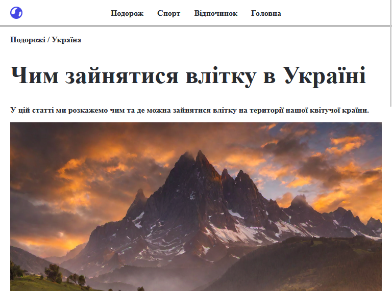
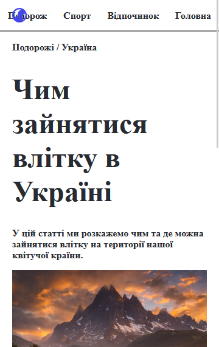

← На головну

Подорожі / Україна
Замовник та сенси
Автор: Гліб Лавренко
Дата: 30 липня 2023
Мета: Один з перших сайтів — стаття про літній відпочинок в Україні: гори, етнографічні екскурсії та курортне лікування.
Технології
Опис проєкту
Інформаційний сайт-стаття «Чим зайнятися влітку в Україні» — один з перших самостійних проєктів. Охоплює три напрямки літнього відпочинку: гірський туризм (Говерла, Карпати), етнографічні екскурсії (музеї народної архітектури, сільські фестивалі) та курортне лікування (Трускавець, Моршин, Яремче). Проєкт демонструє базові навички верстки та роботи з текстовим контентом.

